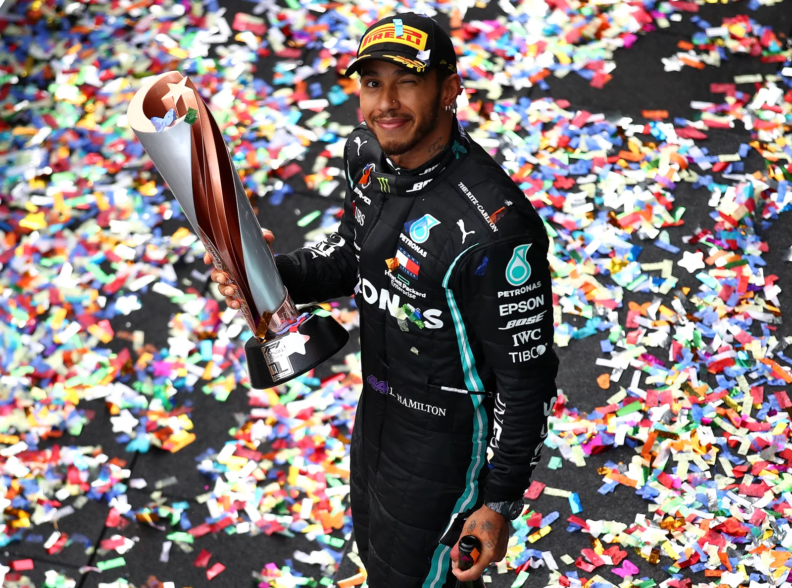
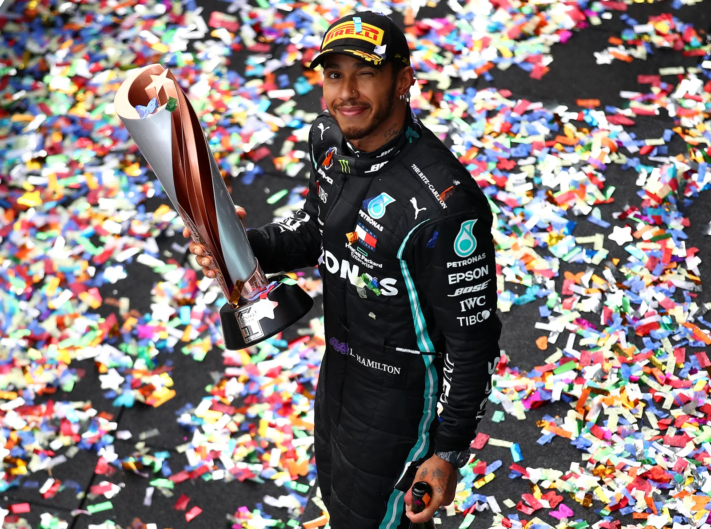

What is Formula 1
Founded in 1950, Formula 1 is the most prestigious motor racing competition. As of 2025 it spans five continents, regulated by the Fédération Internationale de l'Automobile. The season runs 24 Grands Prix. Teams compete for Drivers and Constructors Championships under strict technical and sporting regulations. Sponsors fund development within the rules.
- 24 Grands Prix
- 5 continents
- 10 teams, 2 drivers each

Teams and Drivers
| Team | Driver 1 | Driver 2 |
|---|---|---|
| McLaren | Oscar Piastri | Lando Norris |
| Mercedes | George Russell | Kimi Antonelli |
| Ferrari | Charles Leclerc | Lewis Hamilton |
| Red Bull Racing | Max Verstappen | Yuki Tsunoda |
Gallery
 

Quick answers
How do championships work
Drivers and teams score points by finishing in the top positions. The most points over the season win the titles.
How do teams gain advantage
Engineering upgrades within the rules, race strategy, pit stop execution, and driver performance.
Is driver radio always on
Radio communication is managed by teams and can be restricted by regulations.